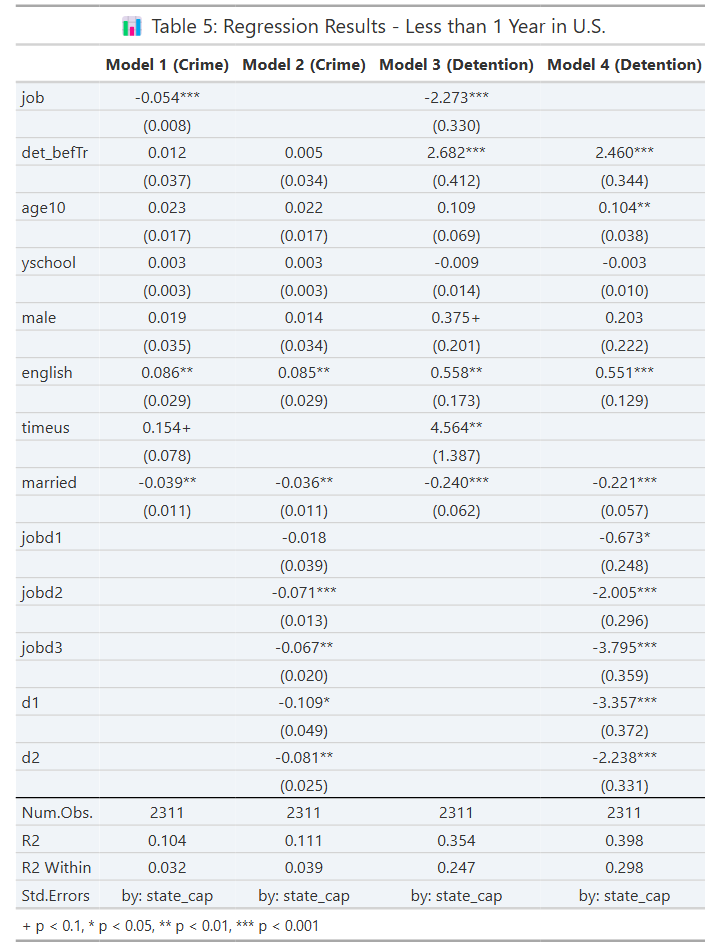
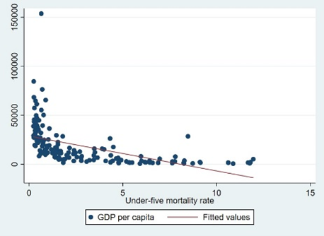
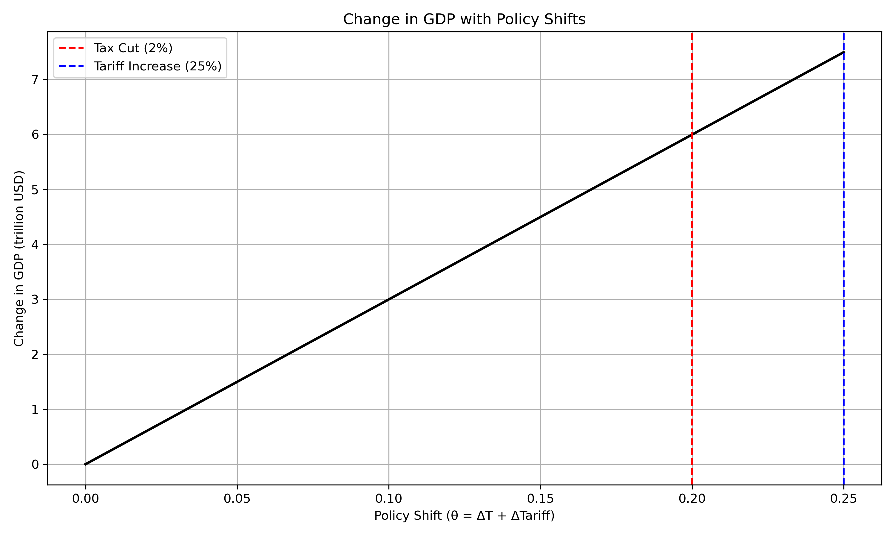

Employment and Crime – Causal Inference Reanalysis
R, Fixed-Effects Regression
Estimates the effect of employment status on crime and detention duration using fixed-effects (feols) regression with standard errors clustered by state capital and weighted observations.

Code on GitHub
Infant Mortality and GDP
STATA, Regression
Compares the relationship between GDP per capita and under-five mortality in 1950 and 2018 using scatterplots and regression models.

Code on GitHub
Policy Memo – MATLAB to Python Reanalysis
Python, MATLAB, Policy Simulation
An elasticity-based simulation of how tax cuts and tariff increases affect GDP, GDP per capita, and wealth inequality, ported from an original MATLAB model to Python, with an accompanying policy memo.

Code on GitHub
LaTeX Research Papers
LaTeX
Research papers written in LaTeX, including work for Advanced Policy Research Methods and a study of Chevron deference, each with source, compiled PDF, and bibliography.
Code on GitHub
Excel Coursework
Excel, Pivot Tables, VBA
Formulas, pivot tables, and macro-enabled worksheets built for econometrics coursework (ECON 3357).
Code on GitHub